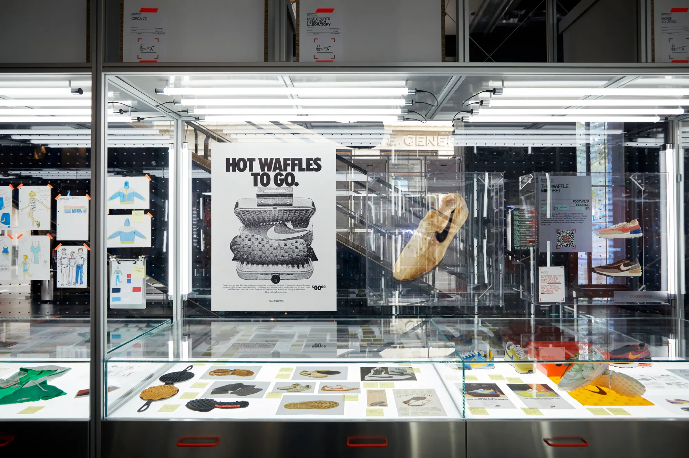
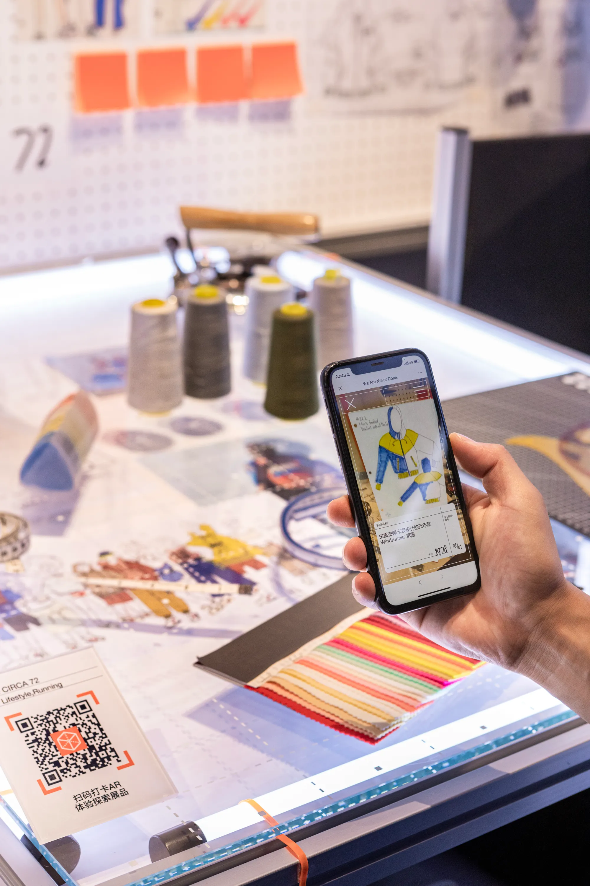
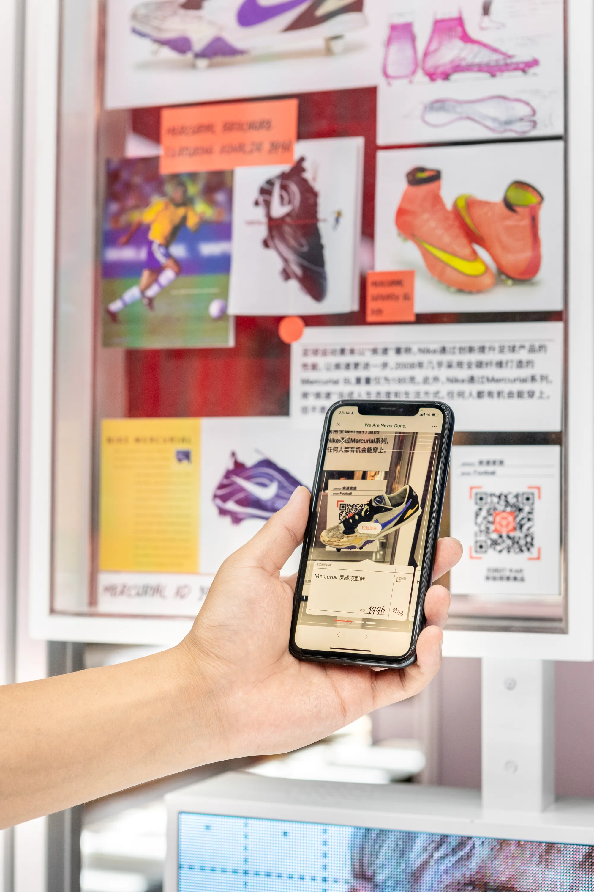
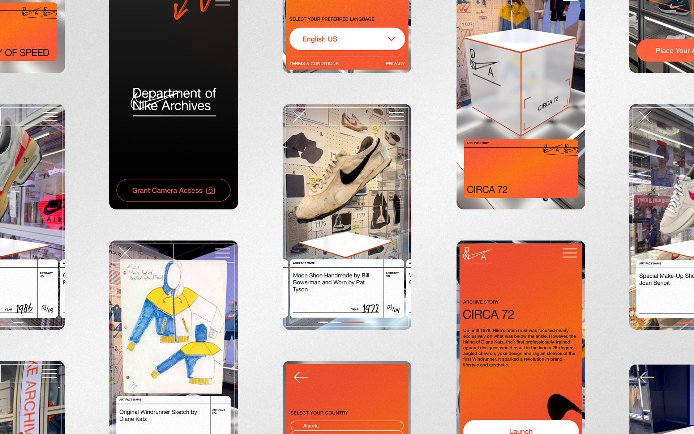
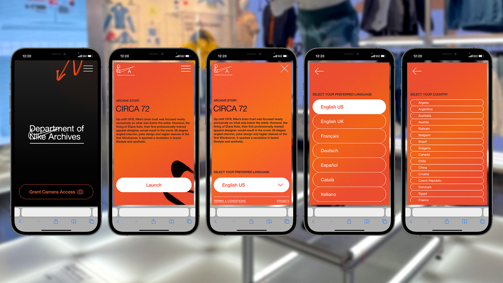
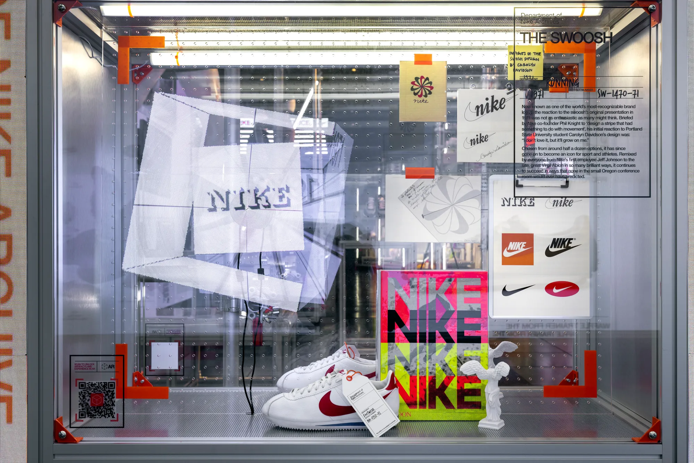

NIKE / 50TH ANNIVERSARY
AR (2022)
In celebration of Nike’s 50th anniversary, BUCK joined forces with the Nike Global Brand Experience team to conceptualize, design and develop an in-store WebAR experience.
The objective was to bring the brand’s rich heritage to the forefront and support the future of storytelling within retail spaces. I was involved in this project as associate creative director.
This AR experience served as a gateway into the revered DNA (Department of Nike Archives, in Portland), inviting visitors to Nike stores around the world to engage with culturally significant artifacts from 11 curated stories. With a special focus on the Houses of Innovation in New York, Paris, and Shanghai, the experience was catered to stores of all scales, ensuring accessibility for consumers across a wide range of geographical locations.
By scanning a QR code adjacent to the physical installation using their smartphones, store visitors were transported to a custom web page, launching the AR experience in the browser with the power of SLAM (Simultaneous localization and mapping) technology. Inside a virtual box, a trove of artifacts awaited exploration through responsive touch gestures.
✲ Full case study and credits → buck.co
AR (2022)
In celebration of Nike’s 50th anniversary, BUCK joined forces with the Nike Global Brand Experience team to conceptualize, design and develop an in-store WebAR experience.
The objective was to bring the brand’s rich heritage to the forefront and support the future of storytelling within retail spaces. I was involved in this project as associate creative director.
This AR experience served as a gateway into the revered DNA (Department of Nike Archives, in Portland), inviting visitors to Nike stores around the world to engage with culturally significant artifacts from 11 curated stories. With a special focus on the Houses of Innovation in New York, Paris, and Shanghai, the experience was catered to stores of all scales, ensuring accessibility for consumers across a wide range of geographical locations.
By scanning a QR code adjacent to the physical installation using their smartphones, store visitors were transported to a custom web page, launching the AR experience in the browser with the power of SLAM (Simultaneous localization and mapping) technology. Inside a virtual box, a trove of artifacts awaited exploration through responsive touch gestures.
✲ Full case study and credits → buck.co






READ ON
Little Black Book → Celebrating 50 Years of Nike with an AR Archive Experience
VR Scout → Nike Celebrates 50 Years with in-store AR Experience
Input Mag → Nike's New AR Experience Highlights Archival Style
Little Black Book → Celebrating 50 Years of Nike with an AR Archive Experience
VR Scout → Nike Celebrates 50 Years with in-store AR Experience
Input Mag → Nike's New AR Experience Highlights Archival Style

Documentation / Courtesy of Nike Global Brand Experience Team